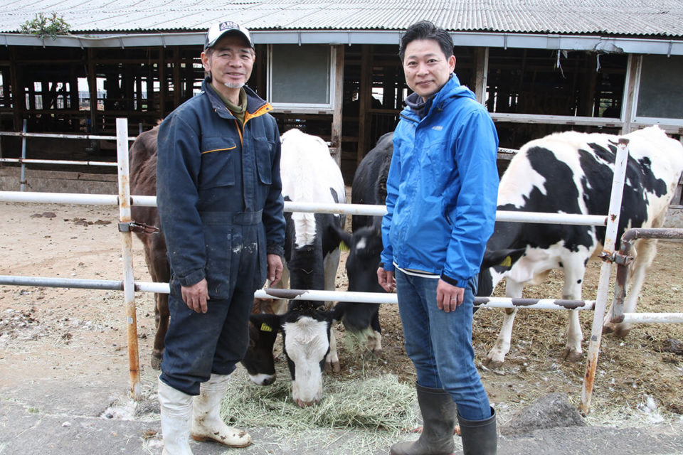
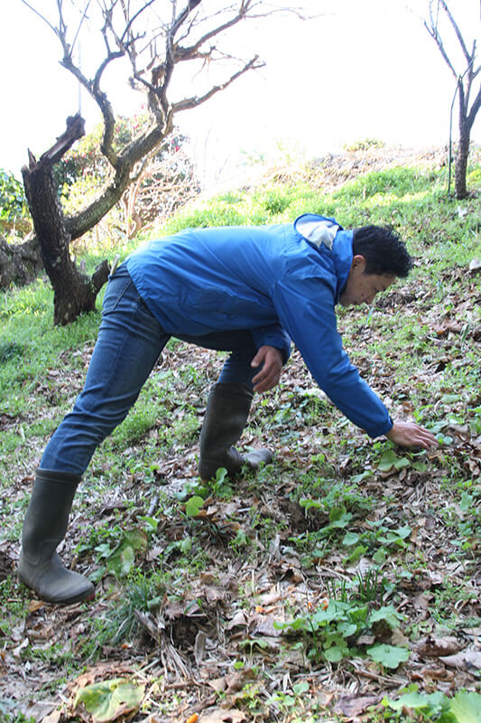
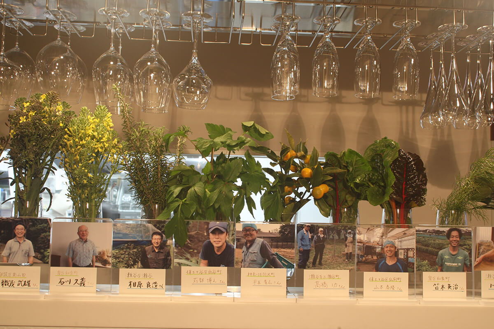
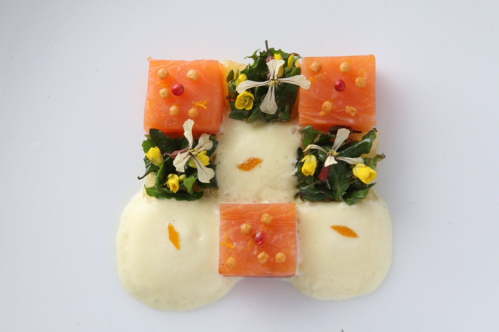
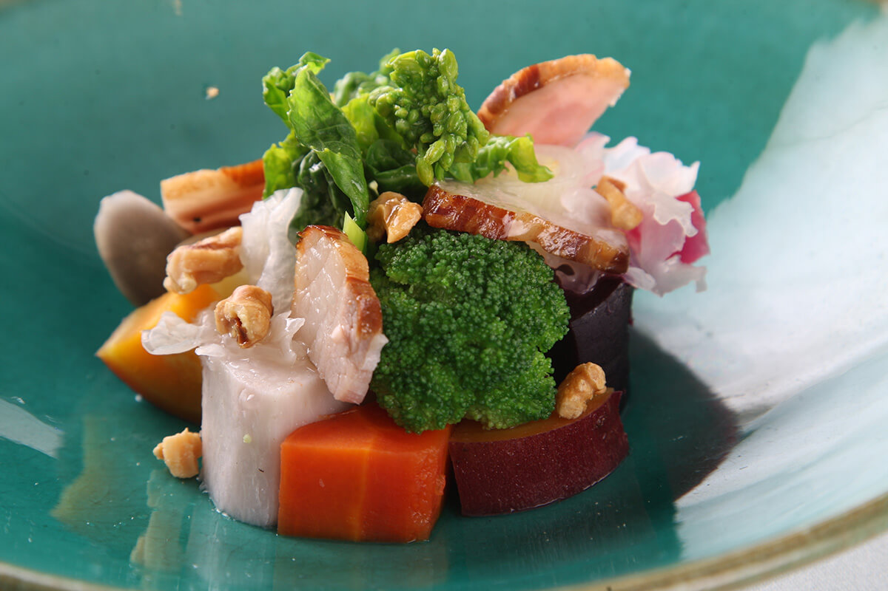
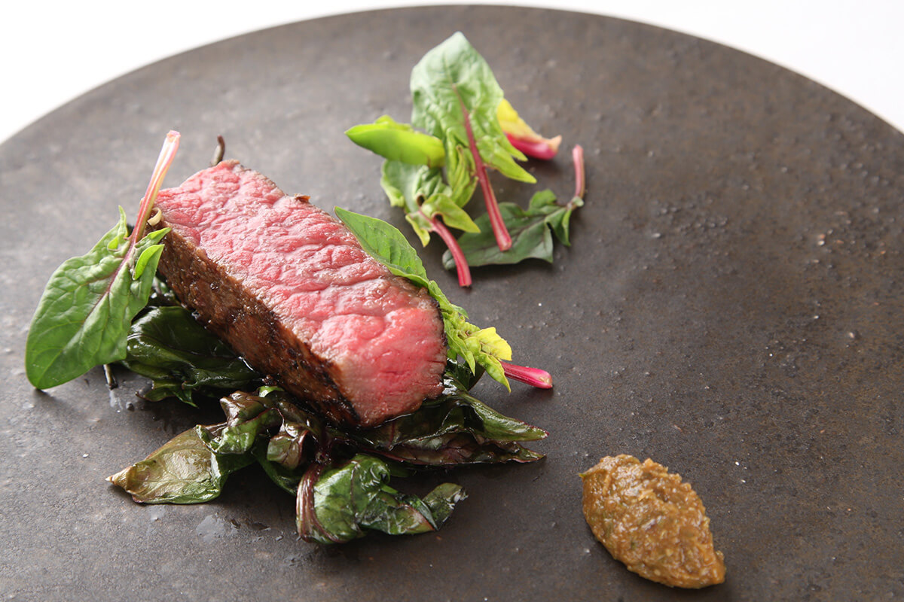

Префектура Канагава · Ёкогама · еда
Pétale de Sakura: французская кухня из ёкогамских овощей и идей якудзэна

Ёкогаму знают как портовый город, но в получасе езды от ресторана Pétale de Sakura работают почти тридцать ферм. Шеф Намба знает, что растёт на каждой из них, и сам ездит за урожаем.
Шеф
День начинается со звонка фермеру
День шефа Намбы начинается с телефонных разговоров с фермерами. В радиусе получаса езды от ресторана у него почти тридцать поставщиков, и он держит в голове, у кого что растёт и в каком состоянии. «Скоро, наверное, подрастёт цветная капуста у одного фермера, а на холме за домом у другого были кумкваты», рассуждает он. Сначала шеф уточняет по телефону, как обстоят дела, а потом едет собирать урожай сам.

«На этой машине я езжу три года, а пробег уже больше 100 000 километров», говорит шеф. По утрам он заезжает в пять или шесть хозяйств, иногда ездит дважды, утром и днём. Насколько часто он бывает у фермеров, видно по пробегу.

Шеф Намба дважды стажировался во Франции, в сумме три года, и закончил стажировку шефом отдела в парижском ресторане с тремя звёздами. Когда в 2009 году он вернулся в Японию, известный шеф Киёми Микуни поставил его управляющим и шеф-поваром ресторана «Микуни Ёкогама». «Микуни просил меня об одном: продукты должны быть местными», вспоминает Намба.
А есть ли в Ёкогаме вообще фермеры? Оказалось, сельское хозяйство в городе развито куда сильнее, чем можно подумать. В свободное время шеф ездил по хозяйствам и шаг за шагом выстраивал связи с теми, кто выращивает ёкогамские продукты. Одновременно он искал, как сделать французскую кухню полезнее, и особенно его интересовал якудзэн, китайская система питания, в которой еду подбирают как лекарство.
Кухня
Свободная французская кухня с якудзэном

Каждый день имея дело с овощами с грядки, шеф Намба на себе почувствовал, насколько они полезны. «Я по-своему использовал идею, что еда и лекарство имеют один корень: по еде можно понять состояние тела и поправить его», объясняет он. Потом знакомые свели его со специалисткой, которая по собственной методике соединила якудзэн с йогой.
«Как выбирать продукты, как их сочетать: от неё я получил массу подсказок для меню», говорит шеф. Он попросил её участвовать в обсуждении новых блюд, и так ёкогамские продукты встретились с якудзэном. Кухня шефа Намбы постепенно стала его собственной французской кухней.

В декабре 2014 года шеф открыл собственный ресторан. Он стоит рядом со станцией Яёйдай на линии Идзумино железной дороги Сотэцу, в районе Идзуми на юго-западе Ёкогамы. Место удобно не только из-за транспорта: главное для шефа было оказаться поближе к фермерам.
Название Pétale de Sakura переводится с французского как «лепесток сакуры». У сакуры для шефа особый смысл. Его семья в Окаяме семьдесят лет, со времён бабушки и дедушки, держала кафе, и называлось оно «Кисса Сакура». К тому же станция Яёйдай оказалась известным местом любования сакурой. Так цветок и попал в название ресторана.

В 2020 году ресторан встретил шестой год. Ёкогамских продуктов в меню всё больше, а в соединении французской кухни с якудзэном шеф одну за другой решает новые задачи. Раньше шеф не брал японские продукты вроде тофу, но по совету специалистки попробовал снова. «Если сделать из него крем, то и в соусе он не выглядит чужим», говорит Намба.
Ужин за 8000 иен (цена 2020 года) при открытии ресторана состоял из десяти блюд, а со временем их стало одиннадцать. «На одной тарелке оказалось слишком много всего. Разделил её на две, и стало легче», объясняет шеф. Цену при этом он не поднял. Вкусно, полезно для тела и не бьёт по карману: поэтому гости уходят отсюда с улыбкой.
Pétale de Sakura
- Адрес
- префектура Канагава, Ёкогама, район Идзуми, Яёйдай, 5-2
- Телефон
- +81 45-443-5876
- Часы работы
- 11:30–15:00 (последний заказ 14:00), 18:00–22:00 (последний заказ 21:00)
- Выходные
- понедельник
- Цены / Вход
- обед от 4000 иен, ужин от 6000 иен (без налога и платы за обслуживание)
- Как добраться
- рядом со станцией Яёйдай линии Сотэцу Идзумино
Фото: Мунэаки Маэда.